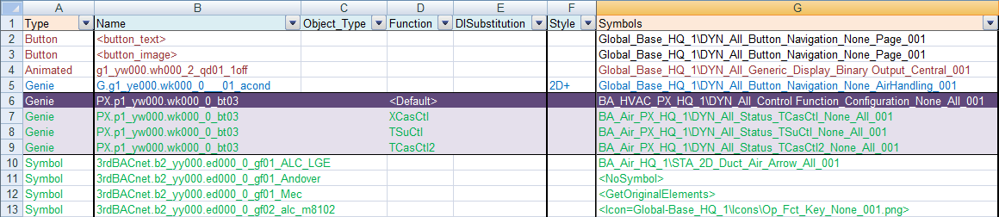
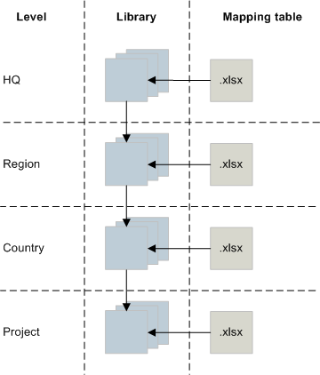
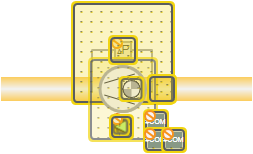
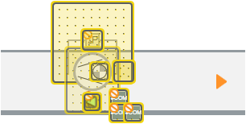
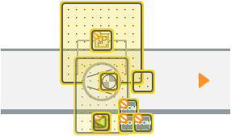
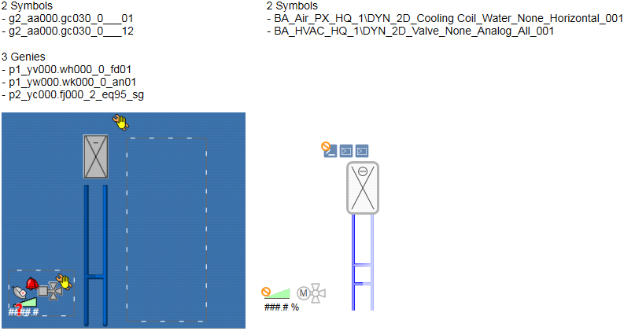

Modify Desigo Insight Graphic Libraries
Mapping Table
A Desigo Insight symbol or Genie is mapped to a Desigo CC symbol based on the entries in the mapping table.
You can modify the mapping of Desigo Insight Symbols and Genies to Desigo CC symbols to meet the needs of your customer.

Criteria for Mapping Graphic Elements
The following criteria are used for mapping:
- Symbol or Genie name in the Name column.
- Object type in the Object_Type column: The short form for the type designation, for example, AI_RED for GMS_desigo_px_EOT_BA_PX_AI_RED_10, MO for GMS_desigo_px_EOT_BA_PX_MO_10.
- The function in the Function column: For example, some ventilation Genies are mapped to the same Desigo CC symbol but another substitution may need to be set depending on the function (Fan1St, Fan2St, and so on).
- Desigo Insight substitution in the DISubstitution column: A Desigo CC symbol is mapped based on a Genie substitution. For example, when writing TD_AO to the column, the symbol is drawn if the Genie has a substitution named TD_AO. The value of the substitution is a data point reference and is written to the symbol's object reference. The value is also used to query the function and object type.
- The DI substitution is useful if you intend to map a Genie to multiple Desigo CC symbols, in other words, multiple symbols are drawn if you have multiple entries in this column. You can also map a contingent substitution value, for example, entry Direct=1 means that the symbol is only mapped if the Genie has a substitution named Direct and the value 1. In this case, we recommend configuring the data point reference within a substitution, for example, <ObjectRef> =<Ref:%TD_AO>.
You can write multiple entries to the field if you want to draw a Citect Genie or symbol; each entry must have an asterisk (*). All the elements are overlapped regardless of a specific substitution value. - Style in the Style column: Ventilation with style 2D+ is mapped using the same Desigo CC symbol as ventilation with 2D, but with a different offset. You can indicate a style to use a new entry using another style.
To set a default for mapping, write <Default> to the Object_Type or Function columns. The entry <Default> is searched and taken over in the line if only the Genie name is affected (and not another criterion).
You can enter the following entries in the Symbols column in the mapping table rather than mapping a Desigo Insight graphic element to Desigo CC:
- <NoSymbol>: The Genie or symbol is not mapped, even if you have selected the check box Show Missing Symbols in the Graphics Conversion Configuration Tool.
- <GetOriginalElements>: Draws the Genie's original elements.
- <Icon=Library\IconName.png>: A Desigo CC icon from the library is used instead of a symbol.
Mapping Symbol Sets to a Management Platform Symbol
You can also map symbol sets to Desigo CC.
Write Animated to the Type column on the mapping table. The symbol set can then be mapped to a Desigo CC symbol. The name of the first referenced PNG file (without the extension .png) is used to find matches in the Name field on the mapping table.
A symbol set cannot be displayed directly. A symbol set is converted to multiple images in Desigo CC. The images are overlaid and the property Visible is set to display only a single image. The symbol is used if a PNG file can be mapped to the symbol.
An animated GIF element is created Desigo CC for a Citect animated symbol set.
Libraries
The configuration for mapping Desigo Insight Genies and symbols to Desigo CC symbols is saved to the mapping table (file conversion_table.xlsx). The file belongs to library BA_Software_Desigo_Graphics_Migration_HQ_1. The file is located at [Installation Drive]: > [Installation Folder] > [Project Name] > Libraries > BA_Software_Desigo_Graphics_Migration_HQ_1 > ConversionTable on your Desigo CC installation.
To modify the mapping table, select the library in the System Browser and click Modify in the Library Configurator tab.
You can create one mapping table each for headquarters, regions, RCs, and project libraries. The information is read in the sequence Headquarters > Region > RC > Project. The last read entries are at the top.

New or edited entries are written to the mapping table when your click Update MT in the Graphics Migration Configuration Tool. The entries match the current modification level, for example, project: Project.
Create your own library folder if the library folder is not found.
Mapping Table
Column | Description |
|---|---|
Type | Element type:
The mapped Desigo CC symbol is placed in the graphic and its object reference is set to the target graphic or target point. A button with a known Cicode, for example, WinPageDisplay, is mapped to a Desigo CCsymbol. Command scripts in buttons, for example, TagWrite() or FlashMessage(), are not supported.
|
Name | The Citect symbol or Genie is mapped to a Desigo CC symbol. Capitalization is irrelevant. |
Object_Type | The object type, for example: Binary (BO), multistate (MO). Write <Default> to the columns to set a default for mapping. |
Function | Some ventilation Genies are mapped to the same Desigo CC symbol but another substitution may need to be set depending on the function (Fan1St, Fan2St, and so on). Write <Default> to the columns to set a default for mapping. |
Style | A symbol with various styles can have different offsets. For example: 2D fan display:  2D display in a 2D+ environment with the style Any:  2D display in a 2D+ environment with the style 2D+:  |
Symbols | The Desigo CC symbol name to which the Desigo Insight symbol is mapped. You can enter one of the following if you do not want to map the Desigo Insight symbol to the Desigo CC symbol:
|
X | The graphic's X offset coordinates. The graphics are position from the top left-hand corner. |
Y | The graphic's Y offset coordinates. The graphics are position from the top left-hand corner. |
Adjust size | The symbol's height and width:
|
Direction | The value written to the substitution Direction. |
Substitution | If not empty, an expression in the form of X=Y refers to entering a substitution named X with Y for the symbol instance, for example, SensorName=T. Substitutions can also be used to pass over certain instructions for handling the symbol in the graphics process. Possibilities:
|
Ignore mapping if any nearby | Forms a specific Genie on a Desigo CC symbol if the relevant Genies are not nearby. Enter a Genie here. Mapping on the current Genie is ignored if one of these nearby Genies is found. The nearby element cannot be wider than 60 pixels on the X axis and not more than 100 pixels away on the Y axis. |
Use tag from nearby genie | A tag can be taken from a nearby Genie if the element for mapping does not have one. Enter a Genie. The first tag is taken that is not empty. The nearby element cannot be wider than 60 pixels on the X axis and not more than 100 pixels away on the Y axis. |
Use coordinates from nearby genie | You can use the X and Y coordinates of a Genie or Symbol that is nearby. Enter the coordinates here. The coordinates are taken from the first suitable element. The nearby element cannot be wider than 60 pixels on the X axis and not more than 100 pixels away on the Y axis. |
Trace | You can enter a text group name and a text index. The text is displayed in the Summary Log. For example: Check the "size" and "mixing position"! Appending a question mark to the text group names, for example, textgroup_XY.?, displays the text from the text group if no symbol is found. It is useful, for example, to inform the user that the extension module is not installed. You can also enter a conditional trace based on the value of a Genie substitution. For example: Entering TxG_DIGM_Trace_Info_Message.9.? %SG%!=AUTO, displays the text with index 9 for text group TxG_DIGM_Trace_Info_Message, if the associated Genie has a substitution named SG that does not have the value AUTO. You can use the equal sign (=) for the condition. You can define a color for these texts in the Text group editor in the column Farbe. The text is displayed in the Summary Log in the defined color. |
Remark | Enter a comment here. |
Substitutions
A Genie typically has only a single data point reference that was assigned with drag-and-drop in the Desigo Insight graphics configuration. The reference is written to the property object reference for a Desigo CC symbol.
A Genie can, however, have multiple references. You can use substitutions in this case that reference the name of the Genie substitutions. For example:
CcSubstitutionName = %GenieSubstitutionName%
In the event you intend to assign a specific Genie substitution of a Desigo CC symbol object reference property, use:
<ObjectRef> = %GenieSubstitutionName%
In the event the value of a Genie substitution is a reference, use:
CcSubstitutionName = <Ref:%GenieSubstitutionName%>
A Genie has, for example, the following substitutions:
- <Substitution Name="ToolTip"/>
- <Substitution Name="TD_DO" Value="Site_B_Object_BO"/>
- <Substitution Name="TD_AO" Value="Site_B_Object_AO"/>
Write the following substitutions to the mapping table if a Desigo CC symbol possesses the substitutions ToolTip, DigitalOut and AnalogOut:
- Tooltip = %ToolTip%
- <ObjectRef> = <Ref:%TD_DO%>
- AnalogOut = <Ref:%TD_AO%>
You can convert a Genie substitution including a Cicode statement using the following Syntax in Desigo CC JavaScript:
CcSubstitutionName = <Script:%GenieSubstitutionName%>
The Cicode statements are cross compiled by the script token.
For example:
Demo_B_A_Ahu_SpH = 1
Is compiled as follows:
Read("System1.LogicalView:Logical.Demo.B.A.Ahu.SpH;") == 1
A tag in Cicode is automatically converted to a Desigo CC reference and encapsulated in a Read() script.
Only simple statements with tags and logical and mathematically operators are supported.
Working with more than 6 6 substitutions
The mapping table in the HQ library has 6 substitution columns.
Only 6 substitutions are written to the mapping table if a customized mapping is created with more than 6 substitutions in the Graphics Migration Configuration Tool (by clicking Update MT).
Manually add new substitution columns to file conversion_table.xlsx to write more than 6 substitutions to the mapping table and reload the mapping table (by clicking Reload MT). Each column must include a column title substitution and all substitution columns must be in sequence.
Substitution-based Generic Mapping
Write <substitution> in the Name column to map a Desigo CC symbol for all Genies using a specific substitution and enter the Genie substitution name in the DISubstitution column. A symbol is mapped based on the Genie's substitution name. For example, if you write TD_C8 to the DISubstitution column, the same symbol is drawn any time a Genie is found with the substitution name TD_C8. This applies to all Genies from all libraries, in other words, the same symbol is drawn if each Genie has the same substitution from each library.
Write, for example, <substitution:PX.p1_yw000.> if you only want to map specific Genies. In this manner, only Genies with the same substitution name and that start with PX.p1_yw000. are mapped. This ensures that only Genies from a specific library are mapped.
Write, for example, TD_C8=SpDHu to the DISubstitution column if you want to map based on a value. The symbol is only mapped if the Genie has the same substitution name (TD_C8) and the same value (SpDHu).
Nearby Operations
The following three graphic elements are mapped to a single Desigo CC symbol during migration of preheaters and coolers on a ventilation plant in a Citect page:
- Switching symbol: They are best used for mapping to a Desigo CC symbol, since specific switching determines the correct substitution on the sole Desigo CC symbol. Unfortunately, the position of this graphic element is not that reliable since project engineers sometime change the length of the piping with the piping ending up behind the cooler symbol. Moreover, it is only a symbol and without a tag.
- Cooler symbol: The Citect switching symbol in use does not need to be mapped. In the event that only this symbol exists, map it to a Desigo CC cooler symbol without switching.
- Click surfaces Genie: This is a Citect Genie that also includes a tag.
The following example illustrates how multiple graphic elements are mapped from Desigo Insight (left) to a single graphic element in Desigo CC (right).

To automatically resolve this case, use Ignore mapping if any nearby, Use tag from nearby genie and Use coordinates from nearby genie.
Handling Groups
All graphic elements within a group are re-added to the group in Desigo CC. This allows you to set attributes for animations, for example, Hidden. The Selection property for the group is set to false.
Page Navigation
A lot of graphics in Desigo Insight have buttons that go to a specific page. You can link a graphic to a data point. A viewport under the name VP graphic name is generated if the graphic is migrated and linked to the target. Click the graphic after migration to go to the associated data point in the Logical View.
Viewports are displayed under the Related Items tab for the corresponding graphic.
The settings are saved to the file AssociatedDps.txt in the folder selected during migration.
The button goes to the corresponding graphic if no associated data point is available. The graphic is displayed in the System Browser, in the Application View.